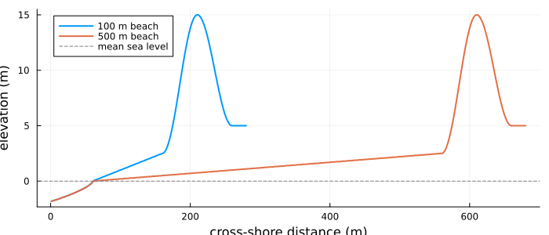
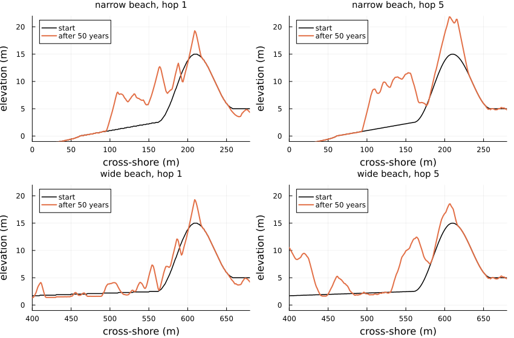
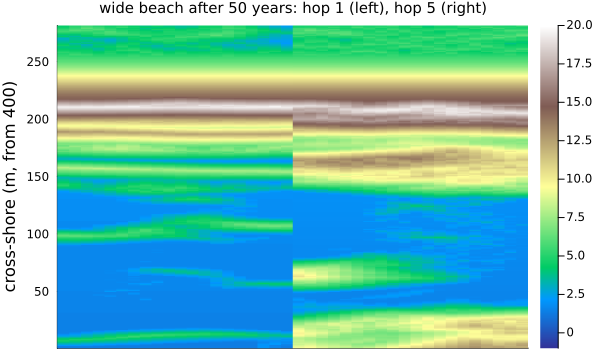

Coastal dunes
Simon Frost
Overview
Coastal foredunes grow where wind blows sand off the beach and dune plants trap it. Teixeira et al. (2023) study this with DuBeVeg, a cellular automaton in the family of Werner’s sand-slab model: the surface is a stack of slabs on each cell, slabs are picked up and hop downwind until they land, avalanches keep slopes below the angle of repose, the sea resets the beach below the water level, and two kinds of plant grow or die back with the sand they gain. In the original model a slab hops one cell; the authors make it hop a saltation length of 5 cells, with slabs five times thinner so that the potential transport is the same, and let vegetation trap slabs part-way through a hop. On a wide beach this changes how the dune grows.
This implementation is an adaptation: the authors’ code is not published, the sea is forced by synthetic water levels, the domain is narrower, and several constants come from the base model’s documentation.
ENV["GKSwstype"] = "100"
using EcologicalCellularAutomata
using CellularAutomataCore
using Plots
using Random
using StatisticsThe model
Each aeolian iteration (50 a year), every bare, dry cell outside the shadow of higher ground gives up a slab with probability (1 - ρ) 0.5, where ρ is its plant cover. A slab moves landward and, at the end of each hop of L cells, lands with probability ρ (1 - 0.1) + 0.1 (always in the shadow); with L = 5, it can also land part-way through a hop on cells whose plant cover is at least 0.3. Every second iteration the sea, with run-up from waves, resets the cells it reaches towards the reference beach; once a year the plants grow or die back with the sand each cell gained.
The beach rises from the shoreline to the foot of a foredune 15 m high and 100 m wide; the source compares a narrow beach of 100 m with a wide one of 500 m.
plot(; xlabel="cross-shore distance (m)", ylabel="elevation (m)", size=(700, 300),
legend=:topleft)
for (beach, c) in ((100, 1), (500, 2))
prof = dune_profile(; beach, h=0.02)
plot!(prof.elevation .* 0.02; lw=2, color=c, label="$beach m beach")
end
hline!([0]; color=:gray, ls=:dash, label="mean sea level")
The same potential transport
The source’s Eq. 3 gives the potential transport Q = h L (pe0 / pd0) n: with slabs of 0.1 m hopping 1 cell or of 0.02 m hopping 5, 25 m³ per metre of beach a year. On a bare, dry beach the slabs crossing a line do carry that:
function flat_flux(h, L; rows=40, iterations=20)
p = merge(defaults(build(:dune_formation)),
(; h, L, rho_star=Inf, hydro_every=10^6, iterations=10^6))
total = 0
for t in 1:iterations
u = (topo=fill(Int32(round(2.9 / h)), rows, 400), pioneer=zeros(rows, 400),
stabilizer=zeros(rows, 400), balance=zeros(Int32, rows, 400),
zref=zeros(Int32, rows, 400), sea=zeros(rows, 400))
u.topo[:, 200:end] .= round(Int32, 3.1 / h)
total += dune_step!(u, p, t, Random.Xoshiro(t))
end
return round(total * h * 50 / (rows * iterations); digits=1)
end
(hop_1=flat_flux(0.1, 1), hop_5=flat_flux(0.02, 5))(hop_1 = 24.6, hop_5 = 24.9)Fifty years of dune growth
One run of 50 years for each beach and representation, on 20 rows of 1 m (the source runs 400 rows five times). We record the sand crossing the dune toe, the first cell above 3 m, each year, and the dune’s volume and width every ten years.
function dune_run(scenario, representation; years=50, rows=20, seed=1)
prob = problem(:dune_formation; scenario, representation, alongshore=rows, years, seed)
p, u, h = prob.p, deepcopy(prob.u0), prob.p.h
flux = zeros(years)
measures = [dune_measures(u; h)]
profiles = [vec(mean(u.topo; dims=1)) .* h]
for t in 1:(50years)
crossed = dune_step!(u, p, t, Random.Xoshiro(hash((prob.seed, t, :dune))))
flux[cld(t, 50)] += crossed * h / rows
if t % 500 == 0
push!(measures, dune_measures(u; h))
push!(profiles, vec(mean(u.topo; dims=1)) .* h)
end
end
return (; flux, measures, profiles, final=u.topo .* h)
end
cases = [(s, r) for s in (:narrow, :wide) for r in (:default, :saltation)]
runs = Dict(zip(cases, fetch.([Threads.@spawn dune_run(c...) for c in cases])))
nothingThe same runs drive the integrator: dune_step! with the generator seeded from the problem’s seed and the iteration is what solve runs at each step.
plot([begin
r = runs[(s, rep)]
plot(r.profiles[1]; color=:black, lw=1.5, label="start",
title="$s beach, hop $(rep === :saltation ? 5 : 1)", titlefontsize=10,
xlabel="cross-shore (m)", ylabel="elevation (m)", legend=:topleft,
xlims=s === :wide ? (400, 680) : (0, 280), ylims=(-1, 22))
plot!(r.profiles[end]; color=2, lw=2, label="after 50 years")
end
for (s, rep) in cases]...; layout=(2, 2), size=(850, 560))
heatmap(hcat(permutedims(runs[(:wide, :default)].final[:, 400:end]),
permutedims(runs[(:wide, :saltation)].final[:, 400:end])); c=:terrain,
clims=(-1, 20), xticks=false, ylabel="cross-shore (m, from 400)", size=(600, 360),
title="wide beach after 50 years: hop 1 (left), hop 5 (right)", titlefontsize=10)
source_volume = Dict((:narrow, :default) => 1500, (:narrow, :saltation) => 1611,
(:wide, :default) => 1563, (:wide, :saltation) => 2234)
[(beach=s, hop=rep === :saltation ? 5 : 1,
toe_flux=round(mean(runs[(s, rep)].flux[2:end]); digits=1),
volume_gain=round(Int,
runs[(s, rep)].measures[end].volume - runs[(s, rep)].measures[1].volume),
source_gain=source_volume[(s, rep)] - 1150,
width=round(Int, runs[(s, rep)].measures[end].width))
for (s, rep) in cases]4-element Vector{@NamedTuple{beach::Symbol, hop::Int64, toe_flux::Float64, volume_gain::Int64, source_gain::Int64, width::Int64}}:
(beach = :narrow, hop = 1, toe_flux = 14.8, volume_gain = 382, source_gain = 350, width = 180)
(beach = :narrow, hop = 5, toe_flux = 17.1, volume_gain = 629, source_gain = 461, width = 183)
(beach = :wide, hop = 1, toe_flux = 13.3, volume_gain = 326, source_gain = 413, width = 375)
(beach = :wide, hop = 5, toe_flux = 22.5, volume_gain = 981, source_gain = 1084, width = 340)The sand crossing the dune toe, in m³ per metre a year, and the gain in dune volume over 50 years, against the source’s medians (from an initial volume of about 1150 m³/m). As in the source, hops of 5 cells carry sand across a wide beach to the dune close to the potential transport, while single-cell hops build bedforms on the beach that hold sand back. So the dune gains much more with hops of 5 cells on the wide beach, here as in the source; on the narrow beach the two differ less.
plot(1:50, [runs[c].flux for c in cases]; lw=1.5,
label=permutedims(["$(c[1]), hop $(c[2] === :saltation ? 5 : 1)" for c in cases]),
xlabel="year", ylabel="flux at the dune toe (m³/m/yr)", ylims=(0, 30),
size=(650, 340), legend=:bottomright)
hline!([25]; color=:gray, ls=:dash, label="potential transport")The dunes here grow wider than the source’s on the wide beach: embryo dunes and bumps on the upper beach rise above 3 m and move the dune toe seaward faster.
Deviations from the source
foreach(d -> println("- ", d), model_info(:dune_formation).deviations)- The source forces the sea with observed water levels at Scheveningen (1970-2020), the highest in each spring-neap cycle; here a synthetic series stands in: 1 m plus a Gumbel-distributed surge of scale 0.3 m, 25 a year.
- The domain is 20 to 100 rows of 1 m alongshore (400 in the source) and only the cross-shore profile from 60 m offshore to 20 m behind the dune (1250 cells in the source). The initial profile is a Dean-like shoreface, a linear beach and a smooth dune ridge to 15 m read from the source's figure; the beach rises to 2.5 m at the dune foot, as the figure shows, where the text says 3 m (with 3 m, small bumps on the upper beach count as the dune).
- Slab transport is synchronous, as in DuBeVeg's code: all pick-ups are drawn from the state at the start of an iteration, with the shadow and the probabilities fixed for its duration.
- Part-way through a hop (Eq. 5), a slab lands only where vegetation is at least rho_star, and the shadow does not force it to; after a failed landing at a hop's end the next hop begins. Slabs reaching the land side of the domain are lost.
- The shadow test uses the continuous threshold i tan(15°) rather than DuBeVeg's floored one.
- Constants not in the source come from DuBeVeg: the growth functions of the pioneer (burial -1.4, 0.2, 0.6, 2.0, 2.2 m/yr, peak 0.2) and stabilizer (-1.4, -0.65, 0, 0.2, 2.8, peak 0.05), lateral expansion 0.2 and establishment 0.05 a year (stabilizers establishing only where the sand balance is zero), the wave run-up relation, the dissipation by the inverse water depth summed from the sea, and the least wave probability 0.1. Plant cover is multiplied each year by the chance that the sea did not reset the cell. The initial split of species is not stated: pioneers seaward of the crest, stabilizers behind.
- The dune is wider than in the source after 50 years, most on the wide beach (about 340 m with hops of 5 cells and 375 m with hops of 1, against about 230 and 220), as embryo dunes and bumps on the upper beach move the dune toe seaward faster.
- The prograding scenario, with a reference surface moving seaward, and the sensitivity to rho_star are not included; one run per case on 20 rows replaces the source's five runs on 400.Teixeira, Manuel, Erik M. Horstman, and Kathelijne M. Wijnberg. 2023. “Conceptualizing Aeolian Sediment Transport in a Cellular Automata Model to Simulate the Bio-Geomorphological Evolution of Beach–Dune Systems.” Journal of Marine Science and Engineering 11 (7): 1278. https://doi.org/10.3390/jmse11071278.